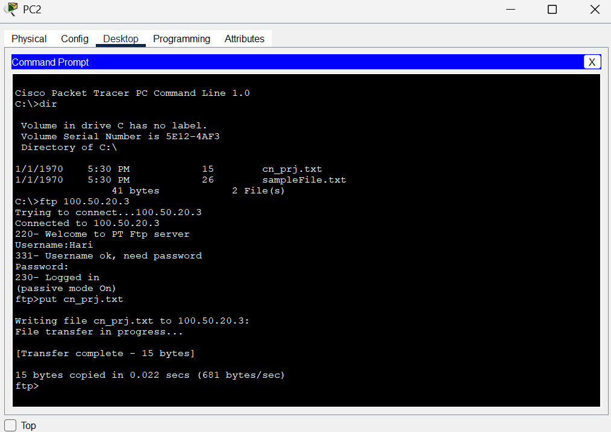
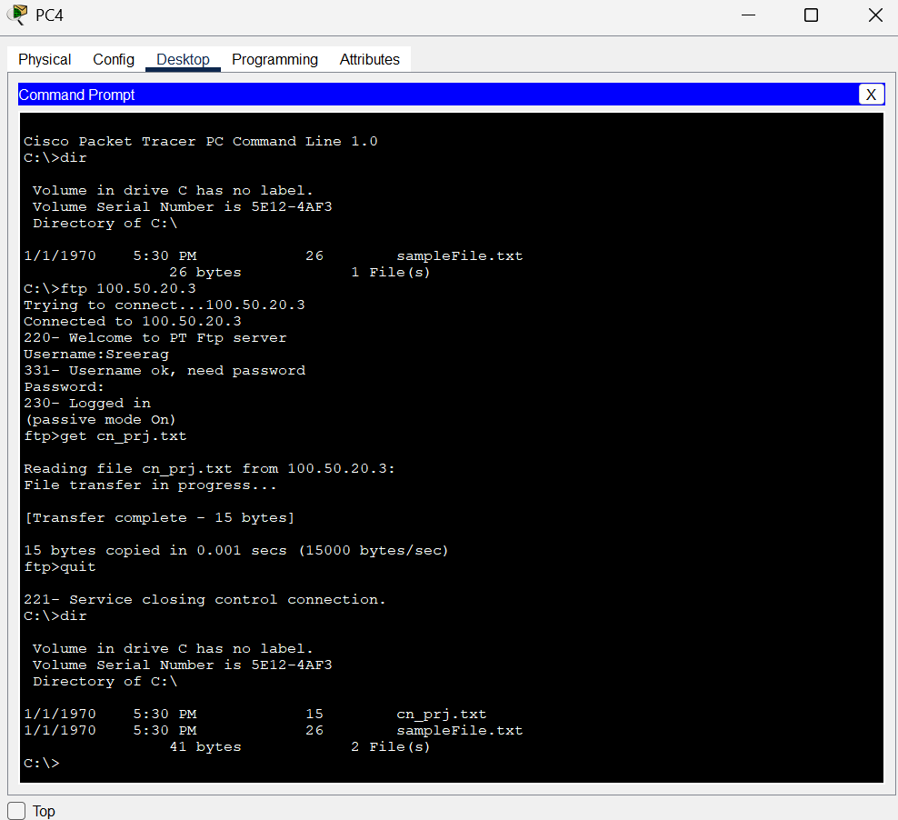

About the Project
In this project, a basic FTP connection is established between two different networks (192.168.1.0 & 192.168.2.0). The FTP server is configured to work from any device in either network.
Steps to Configure FTP
- Create two networks: 192.168.1.0 and 192.168.2.0 (Class C)
- Attach all required networking devices
- Assign IP addresses, subnet masks, and default gateways
- Implement dynamic routing using RIP on all routers
- Configure the FTP server with usernames, passwords, and permissions (read, write, delete, rename, list)
Routing Configuration (RIP)
Configure RIP on each router:
- Router1: 192.168.1.0, 10.0.0.0, 11.0.0.0
- Router2: 100.0.0.0, 12.0.0.0, 11.0.0.0
- Router3: 192.168.2.0, 12.0.0.0, 11.0.0.0
FTP Commands
dir– List files in directoryftp [IP]– Connect to FTP serverput file.txt– Upload file to serverget file.txt– Download file from server
File Transfer Demonstration
1. Uploading File to Server (Using put)
PC2 uploads Test1.txt to the FTP server using:
put cn_prj.txtThe file is then available on the server for other devices.
2. Downloading File from Server (Using get)
PC4 downloads Test1.txt using:
get Test1.txtThe file is successfully saved to PC5 from the FTP server.
Project Files
GitHub Repository
All source files and images are available on GitHub:
https://github.com/HarinandanAM/cn_website